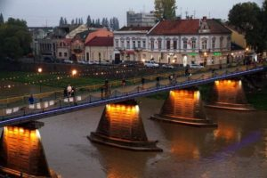

Ужгород – місто мультикультур, ароматної кави, старовинної архітектури та дивовижних милих міні-пам’ятничків. Це місто натхнення, любові, радості, щирості, відчуттів і толерантності. Місто, яке закохує – саме так кажуть про давній тисячолітній Унгвар і туристи, і самі його жителі.Таких, як Ужгород, не існує.Його унікальність в інтернаціональності, його єдність – в особливих ідеях, поглядах і прагненнях людей, його багатогранність – в різноманітті стилів, конфесій, смаків, ароматів, його шарм – в кожній старовинній вуличці. Ужгород – місто, відкрите для кожного: в цьому його головна родзинка.
Традиції та звичаї стародавнього і сучасного Унгвару барвисто проявляють себе під час масових ярмарків, фестивалів, народних гулянь, на так званих велосипедних «найт-райдах» і на інших цікавих заходах, мета яких – не тільки розкрити колорит і унікальність цього міста, але й об’єднати кілька культур – українську, чеську, словацьку, угорську. Сьогодні тут активно розробляють бренд-буки і розвивають бренд міста, найважливіший меседж якого простий і геніальний: в Ужгороді говорять на багатьох мовах.
Ужгород історичний: Унгвар, що пережив цілі епохи
Це найменший обласний центр України, який розташований в передгір’ї Карпат. Ужгород відомий
своєю
приголомшливою історією, яка почалася багато століть назад, на Замковій горі, де сьогодні гордо височіє
величний Ужгородський замок. Початкова його назва угорською мовою звучить як Унгвар (Ungvár) і до сих пір
нерідко використовується самими містянами.
 Вперше про місто згадував ще
Аль-Ідрісі в 1154 році – тоді
Ужгород був найбільшУжгород віддаленим куточком Давньоруської держави. Майже ціле тисячоліття тут
господарювала угорська та австро-німецька знать, чеські капіталісти. Ужгород встиг побувати під крилом
Угорщини, Австро-Угорщини, Чехословаччини, УРСР.
Сучасний Ужгород досить компактний в порівнянні з іншими обласними центрами-гігантами – його площа становить якихось 40 тис. кв. км. Більшу його частину займає так зване Старе місто, де збереглося чимало архітектурних шедеврів. Ужгород навпіл ділить мальовничу річку Уж, яка, за версіями дослідників, і дала місту його ім’я. Обидві частини Унгвару з’єднують сім мостів, найбільш відомими з яких є пішохідний і транспортний. Власне кажучи, краще відкривати історію міста під час чудової прогулянки його найвидатнішими, атмосферними і найпрекраснішими локаціями, яких тут – неймовірна кількість!
Ужгород туристичний: які пам’ятки відвідати
Сьогодні Ужгород один із найпопулярніших серед туристів міст. Головні його атракції переважно знаходяться як в самому його серці – Старому Місті, так і на його околицях:
- «Совине гніздо» – легендарна комора і винний льох Ужгорода, побудований ще в 1781 році. Сьогодні це відреставрована унікальна архітектурна пам’ятка міста, яка розмістилася навпроти мерії, на підніжжі комітатські гірки. Колись в тутешніх пагорбах зберігали вино, пиво, зерно, сало, овечу вовну, а з недавніх пір в «Совине гніздо» вдихнули нове життя.
- «Білий дім» – одна з родзинок чеського кварталу Галагов, спроектована відомим чеським архітектором Антоном Крупко в стилі конструктивізму. Сьогодні тут працює облдержадміністрація.
- Пагорб Слави – масивний меморіальний комплекс, який відкрили в пам’ять про героїв Другої світової війни. Тут, в 217 братських та одиночних могилах, покоїться близько тисячі воїнів-визволителів.
- Закарпатський музей-скансен народної архітектури та побуту – унікальний, адже побувати тут – значить побачити Закарпаття в мініатюрі. Дерев’яний храм, будинки-гражди, гуцульські, бойківські, угорські, румунські хатини, корчма, школа, пральня – все абсолютно так само, як це було кілька століть тому.
Собори та Памятники
- Хрестовоздвиженський кафедральний собор – головний духовний центр Ужгорода, який належить Мукачівській греко-католицькій єпархії. Він вражає своїм дивовижним минулим, зовнішніми та внутрішніми декораціями.
- Горянська ротонда – унікальний історико-архітектурний пам’ятник XII в. в околицях Ужгорода, одна з найстаріших в Україні церков. Найбільшою її цінністю є італійські фрески, яким понад 700 років. А округла шестигранна форма робить її одним з найціннішиУжгородх і рідкісних храмів Європи. Історики схильні вважати, що саме звідси стартує історія міста.
- Горянська ротонда – унікальний історико-архітектурний пам’ятник XII в. в околицях Ужгорода, одна з найстаріших в Україні церков. Найбільшою її цінністю є італійські фрески, яким понад 700 років. А округла шестигранна форма робить її одним з найціннішиУжгородх і рідкісних храмів Європи. Історики схильні вважати, що саме звідси стартує історія міста.
- Міні-скульптурк почали активно з’являтися в Ужгороді шість років тому завдяки скульптору Михайлові Колодко. Це невеликі і дуже милі пам’ятнички так чи інакше пов’язані з історичним минулим або сьогоденням міста. Такі відомі скульптурки, як Миколайчик, Свободка, Джон Лорд, Ференц Ліст, пароплав «Карпатія», бравий солдат Швейк, вузлик Кротона, розбійник Шугай, Малий Уж, іглавскіе їжачки та інші назавжди підкорять ваше серце! Особливо під час найбільш ароматної і найбільш кавової прогулянки стародавнім Унгваром
Про фестивалі в Ужгороді не чув хіба що лінивий! Яскраві, колоритні, барвисті і унікальні масові гуляння, різноманітні креативні, культурні, спортивні, кулінарні, творчі або музичні заходи проходять тут мало не щотижня!
На новорічно-різдвяні свята Ужгород перетворюється на справжню зимову казку. Звідусіль вловимі п’янкі пахощі глінтвейну, солодкої випічки і ароматної кави. У затишних дерев’яних будиночках продають закарпатські сувеніри ручної роботи, пряники, іграшки, а в самому центрі біля красуні-ялинки відбуваються гучні гуляння.
Це, перш за все, традиційний багатотисячний Парад миколайчиків , новорічний ярмарок та інші. А кінець зими ужгородці радісно проводжають, смакуючи смачними млинцями на масовому народному гулянні «Ужгородська палачінта».